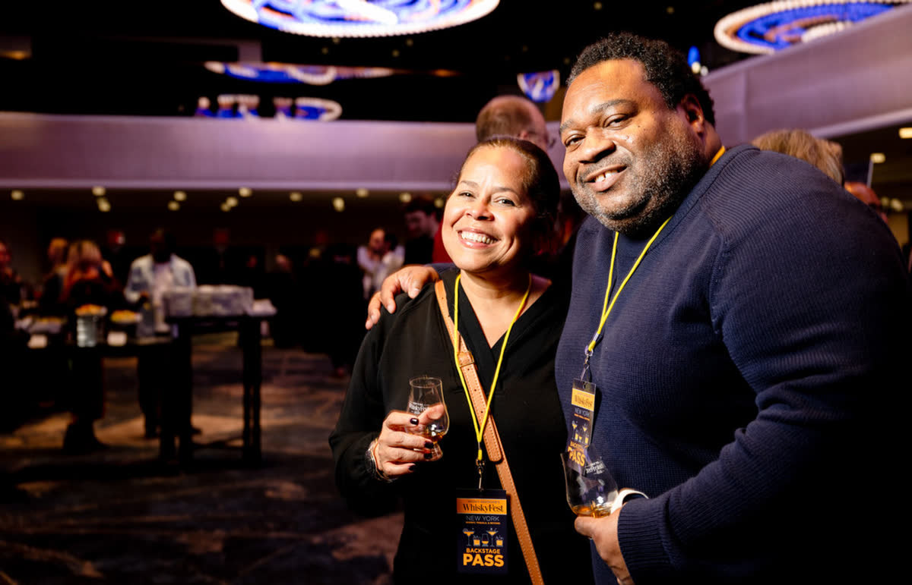

The whisky authority
Poured, nosed, rated blind.
Every score on this site was earned in a glass like this one, by a panel that never sees the label.
Advertisement970 × 250 billboard · 728 × 90 leaderboard · 320 × 50 mobile
WhiskyFest New York · Friday, November 20
Over 100 pours, one night, and the Whisky of the Year announced live.
New York Marriott Marquis. Seminars 2 to 4pm, the Grand Tasting 6:30 to 9:30pm. Rare and ultra-aged whiskies, the distillers and blenders who made them, and dinner through the night.
20days
00hours
00minutes


Latest
All newsNews
Ratings
All ratingsRated this week
Tools
All toolsFind, scan, mix, look up
RatingsRatingsEvery rating by taste, price and score.
CameraShelf scanScores over the bottles in a photo.
RecipesCocktail cabinetWhat you can make with what you have.
ReferenceGlossaryThe words, defined.
ReferenceProducersEvery house we have rated.
RatingsBest valueBottles that beat the price curve.
Advertisement728 × 90 leaderboard · 320 × 50 mobile
Stories
All storiesFeatures, guides, cocktails, travel
Ratings
Open RatingsStart from how you feel
In the store
Point your phone at a shelf.
- 1Photograph the shelf. Any shelf, any light, labels facing you.
- 2The labels are read. Every legible bottle is matched to its rating.
- 3Scores land on the bottles. The best value on the shelf lights up.

Industry
Open the trade viewThe trade view
Producer portfolios
Every bottle from a distillery with its score, note, price and story mentions, and a score history across years.
Release calendar
What is coming, what just dropped, and what we rated this week, by category and market.
Sell-sheet exports
A rating becomes a shelf talker or a one-page sell sheet in the house typography, ready for print.